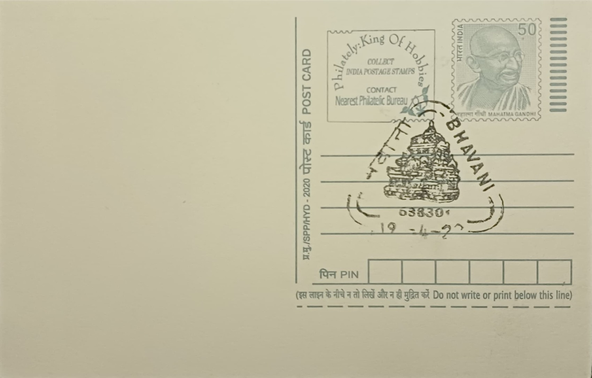

Bhavani Koodal and Rajagopuram
பவானி கூடலும் இராஜகோபுரமும்


Bhavani's sacred standing rests on its position at the meeting point of three waters rather than two: the Kaveri, the Bhavani, and a third, mythic stream called Amudha or Akaya Gangai, believed in local tradition to join the confluence invisibly. This has given the site the honorific "Dakshina Triveni Sangamam," a southern counterpart to the celebrated triveni sangam at Prayagraj, and the alternate name Kooduthurai, literally the confluence ford. The temple itself carries the older name Thirunana, the name under which the seventh-century Saivite saint Thirugnana Sambandar sang of the site in the Tevaram, anchoring its sanctity in Tamil devotional literature well over a thousand years old.
The Sri Sangameswarar Temple is classified among the 275 Paadal Petra Sthalams, the Shiva shrines consecrated by inclusion in the Tevaram hymns of the Nayanmars, placing Bhavani within the canonical geography of Tamil Saivism alongside far better-known temple towns. The poet-saint Arunagirinathar later praised the site in his Tiruppugazh verses, adding a Murugan-devotional layer to a place already sanctified for Shiva worship. Beyond its liturgical classification, the temple functions as the principal pilgrimage anchor for the Kongu Nadu region of western Tamil Nadu, a zone historically governed in turn by the Cheras, the Cholas, and later the Vijayanagara rulers, each of whom left some imprint on the region's temple culture.
The temple complex stands on roughly four acres of land at the river confluence, built in the South Indian Dravidian idiom, with successive Chola and Pandya-period patronage between the tenth and thirteenth centuries credited with expanding and embellishing the original shrine. Its most visually dominant feature, the rajagopuram on the temple's northern side, rises in five tiers above the entrance, a scale that marks Sangameswarar out among the temples of the district and signals the site's importance to approaching pilgrims long before they reach the sanctum. Stone carving within the complex, including figural relief work, has been noted for its craftsmanship, reflecting the broader stoneworking traditions that Kongu Nadu's temple builders practiced across this period of sustained dynastic patronage.
Pilgrims gather at Bhavani Koodal particularly during designated bathing festivals, when ritual immersion at the confluence is held to wash away accumulated sin, a practice that draws crowds comparable in spirit, if not in scale, to bathing days at larger sangams elsewhere in India. The belief in the hidden third river, the Amudha, lends the site a distinctive mystique not shared by simple two-river confluences, since devotees understand themselves to be bathing at a triple union even though only two streams are visible, a detail that marks Bhavani out among Tamil Nadu's many river-confluence shrines. Mahashivaratri and other temple festivals bring additional processions and ritual observance to both the river ghats and the temple precincts.
Administration of the Sangameswarar Temple today falls under the Hindu Religious and Charitable Endowments framework that governs most major Tamil Nadu temples, with local district authorities, including the Erode district administration, listing the site among the region's principal religious-tourism destinations. The temple and its ghats remain in active daily worship rather than functioning solely as a historical monument, with the postal pictorial cancellation issued from Bhavani Head Post Office serving as one of the more recent markers of the site's continued public recognition alongside its older temple-town identity.
| Date of Introduction | August 25, 1977 |
|---|---|
| Address | Senior Postmaster, |
| Bhavani HO, | |
| Erode (dt.), Tamil Nadu - 638301. |